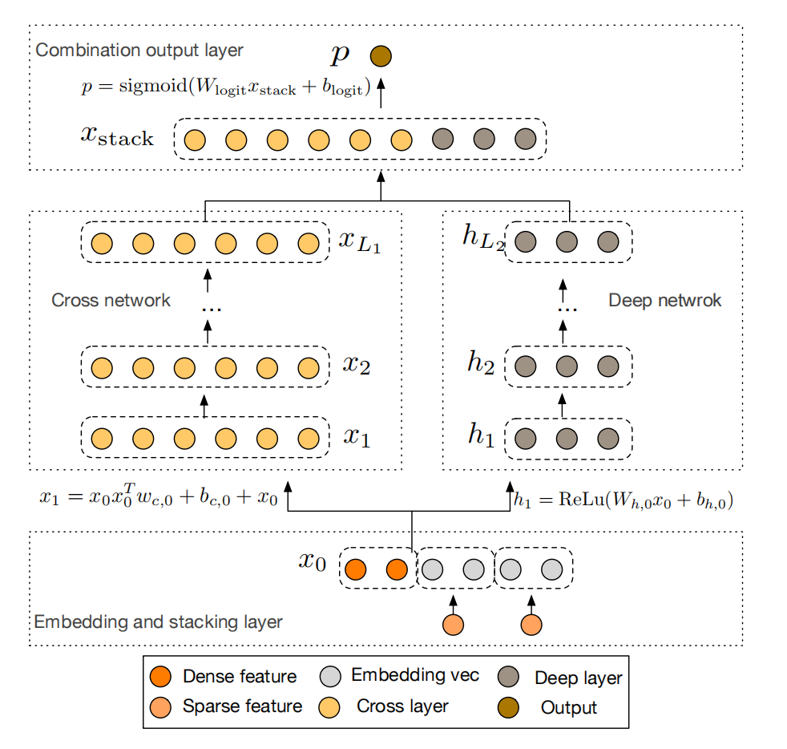
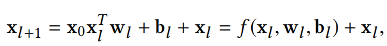
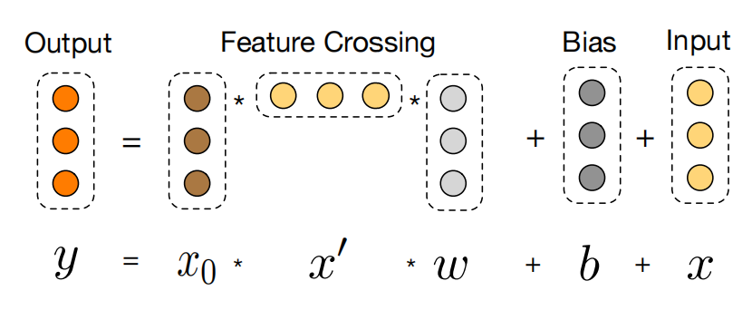
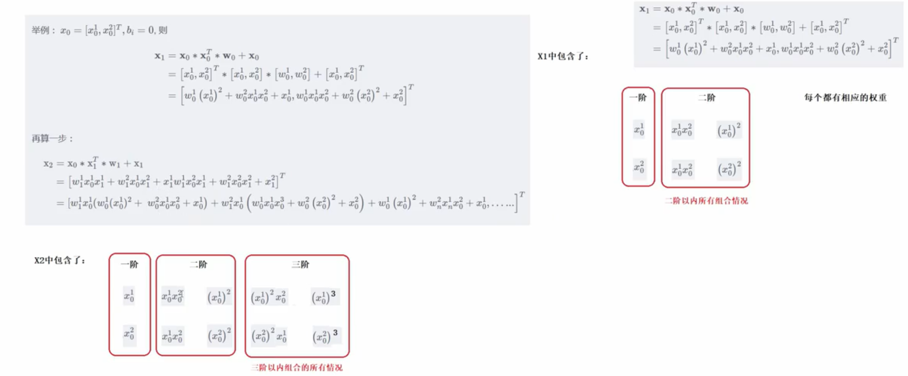

经典推荐模型:Deep&Cross
本文介绍Deep&Cross模型，它沿用了Wide&Deep模型的设计思路，并且将Wide&Deep的Wide部分使用Cross Network进行了替换，解决了Wide&Deep需要人工选取交叉特征的麻烦。
Deep&Cross模型结构如下：

从下往上看。
将稀疏特征进行Embedding，将得到的结果与稠密特征(一般指的是数值型特征)进行拼接，这就是网络的输入$x_0$.
$x_0$再往上兵分两路，左路是Cross Network部分，右路是Deep部分。
先看左路。它是由多个Cross Layer构成的，Cross Layer执行的前向运算如下：

该运算可视化如下：

可以看到 ，$x_0$在每一层中都有参与。
事实上，随着Cross Layer的层数增加，原始输入$x_0$各个位置元素交叉的阶数也在增加，具体参见如下推导：

正因如此，Cross Network相比于Wide&Deep中的Wide部分拥有更强的特征交叉能力，而且，每一个Cross Layer的参数只有$w$和$b$，它们的维度和$x_0$的维度一致，因此参数量是线性的，相比于Deep部分的参数量几乎可以忽略不计。
再看右路。它和Wide&Deep中的Deep部分一样，都是堆叠了多个全连接层+激活函数。
当左路和右路均执行完毕后，两者的输出结果被拼接在一起，映射到一个神经元，然后将其经过$Sigmoid$函数，就得到了最终的预测结果。
以上。
参考资料：